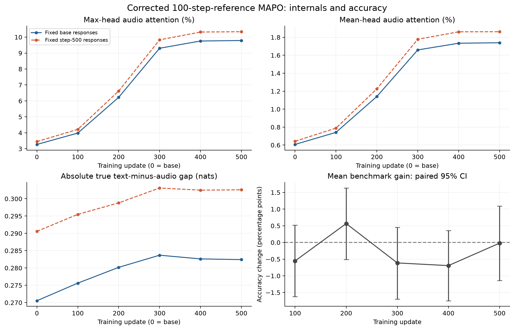
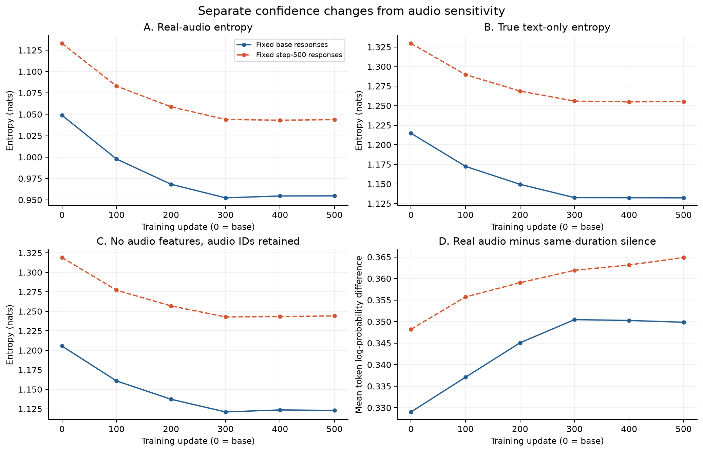
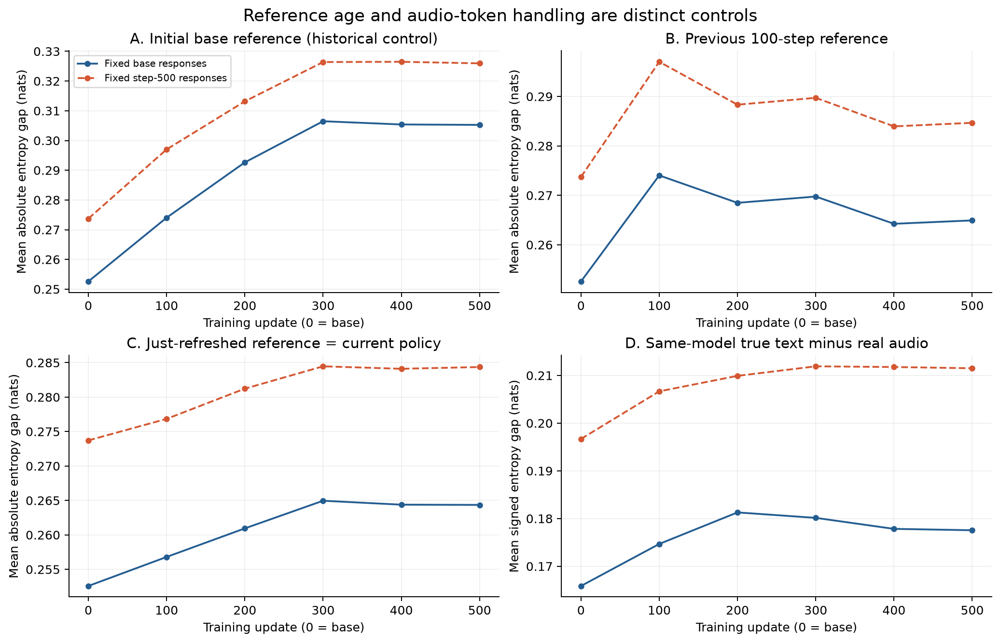
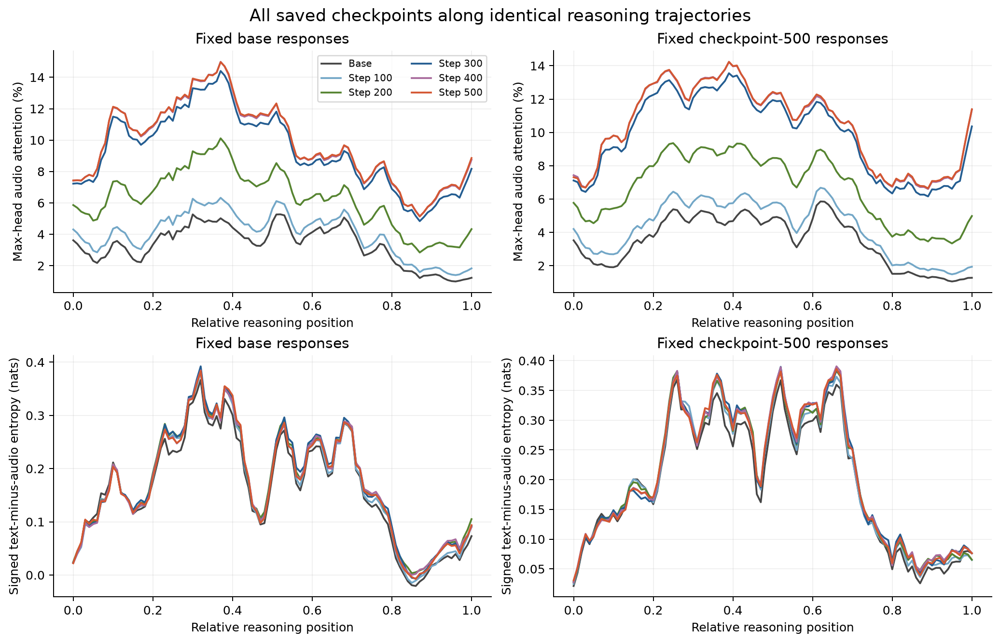
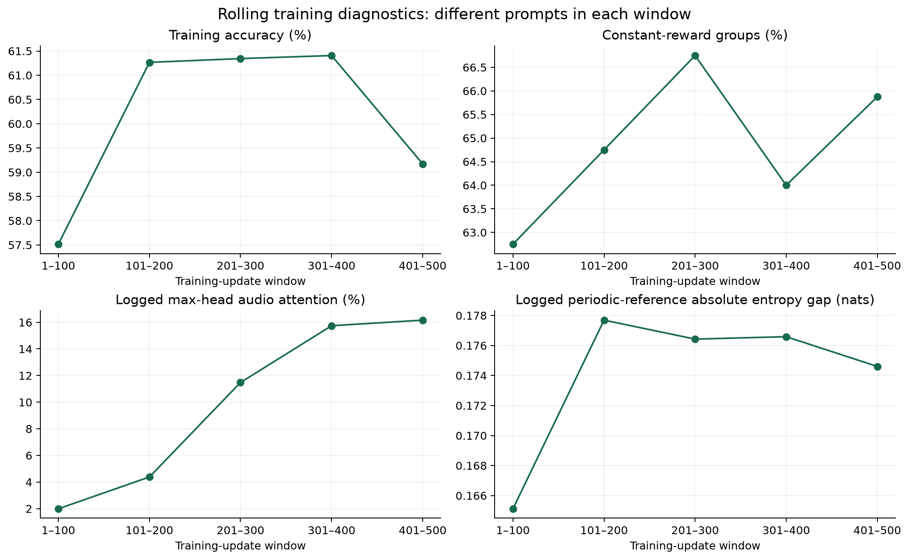
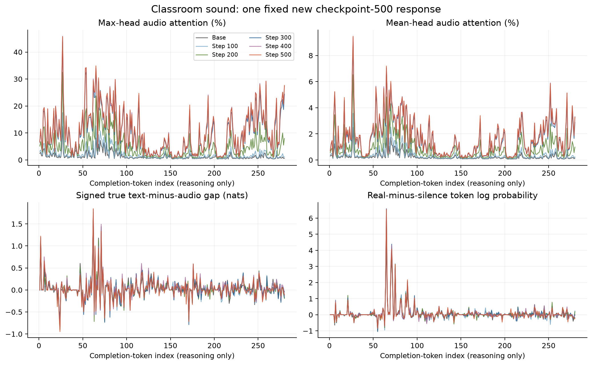
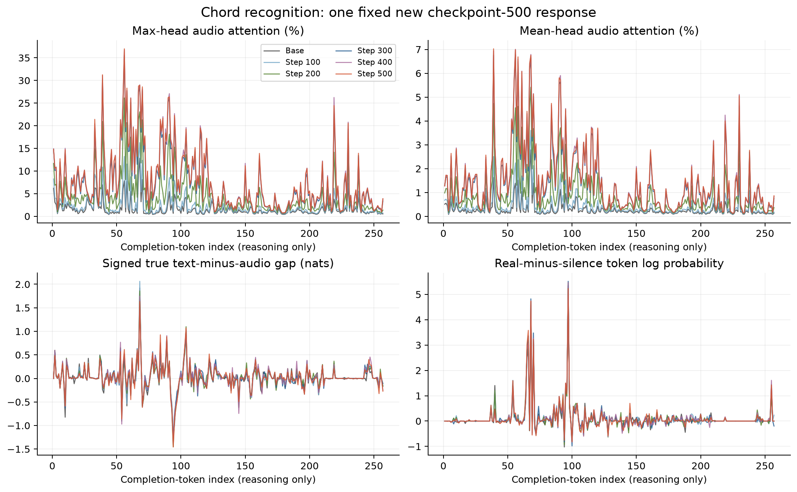
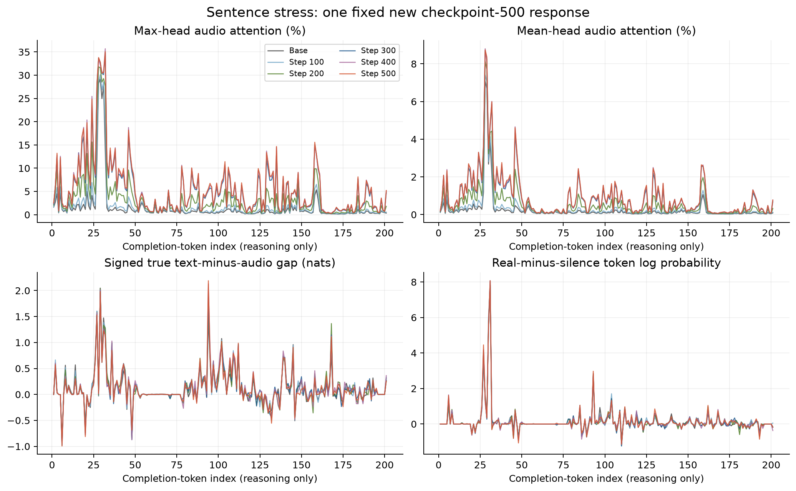

Analysis 03 · Corrected run 642321 · 12 September 2026
MAPO Training Effects: Corrected 100-Step Reference
The model’s internal behavior changes substantially. Better benchmark accuracy is still not established.
A fresh, corrected 500-update run
MOSS-Audio-8B-Thinking, LoRA rank 16 / alpha 32, frozen audio encoder and aligner. Microbatch 8 × accumulation 8 gives 64 completions per update; eight samples per prompt. Learning rate 8e-6, cosine decay, 4% warmup, KL coefficient 0.02, gradient clipping 1.0. Prompt/completion caps: 512/1,024. The three H100-80GB roles were trainer, asynchronous rollout, and exact Qwen3-30B-A3B consistency checker. Rewards retain the 2:1:1 accuracy/format/consistency weighting and attention-loss coefficient 0.05.
The frozen entropy reference is a shared-backbone LoRA snapshot, refreshed every 100 successful optimizer updates; KL remains anchored to the initial base. All five full optimizer checkpoints are saved. Training and evaluation completed; 32,000 scored completions, 4,000 prompt groups, and 3,992 distinct source rows (the first eight repeat through async prefetch).
The previous run 638478 used a defective mixed SDPA/eager attention mask during training. This run corrects causality, entropy graph retention, and numerical guards. Multiple implementation changes accompanied the reference scheme. The historical report is preserved separately; its all-eager probes measured those old adapters, but its training comparison does not isolate fixed versus periodic references.
Matched trajectories establish a real parameter effect
Figure 1 scores the same questions, audio, and continuation tokens under the base model and steps 100/200/300/400/500. There are 24 pre-existing diagnostic audio items, eight per benchmark, each with a cached base continuation and the new step-500 continuation. No new decoding was needed for the probe.
{kind=link}

On fixed base responses, final max-head attention increases on 24/24 items; mean-head attention increases on 24/24. Table 1 highlights step 200 (highest observed benchmark mean) and step 500 (final). More attention or a larger entropy gap is a measured change, not automatically an improvement in grounding.
| Metric | Base | Step 200 | Change [95% CI] | Step 500 | Change [95% CI] |
|---|---|---|---|---|---|
| Max-head audio attention (%) | 3.270 | 6.225 | +2.955 [+2.396, +3.544] | 9.787 | +6.517 [+5.385, +7.733] |
| Mean-head audio attention (%) | 0.607 | 1.141 | +0.534 [+0.422, +0.652] | 1.739 | +1.132 [+0.911, +1.360] |
| Last-eight-layer max-head attention (%) | 4.952 | 7.784 | +2.832 [+2.317, +3.366] | 10.711 | +5.759 [+4.779, +6.801] |
| Current audio entropy (nats) | 1.049 | 0.968 | -0.081 [-0.088, -0.074] | 0.955 | -0.094 [-0.104, -0.085] |
| Current true text-only entropy (nats) | 1.215 | 1.150 | -0.065 [-0.072, -0.058] | 1.132 | -0.083 [-0.092, -0.074] |
| Current no-feature entropy, audio IDs retained (nats) | 1.206 | 1.137 | -0.068 [-0.074, -0.062] | 1.123 | -0.083 [-0.091, -0.074] |
| Signed true text-minus-audio gap (nats) | 0.166 | 0.181 | +0.015 [+0.011, +0.021] | 0.178 | +0.012 [+0.005, +0.018] |
| Absolute true text-minus-audio gap (nats) | 0.271 | 0.280 | +0.010 [+0.006, +0.014] | 0.282 | +0.012 [+0.008, +0.016] |
| Absolute initial-base control gap (nats) | 0.253 | 0.293 | +0.040 [+0.032, +0.047] | 0.305 | +0.053 [+0.043, +0.062] |
| Absolute preceding-reference gap (nats) | 0.253 | 0.268 | +0.016 [+0.012, +0.019] | 0.265 | +0.012 [+0.010, +0.015] |
| Absolute refreshed-reference gap (nats) | 0.253 | 0.261 | +0.008 [+0.006, +0.011] | 0.264 | +0.012 [+0.009, +0.014] |
| Real-minus-silence token log probability | 0.329 | 0.345 | +0.016 [+0.011, +0.021] | 0.350 | +0.021 [+0.016, +0.026] |
| Length-adjusted late/early max-attention ratio | 1.273 | 1.234 | -0.040 [-0.312, +0.170] | 1.323 | +0.050 [-0.415, +0.396] |
Every checkpoint, both response sources
| Fixed response source | Model step | Max attention (%) | Mean attention (%) | True text gap (abs.) | Refreshed gap (abs.) | Real − silence log p |
|---|---|---|---|---|---|---|
| base | Base | 3.270 | 0.607 | 0.2705 | 0.2526 | 0.3290 |
| base | 100 | 3.983 | 0.741 | 0.2756 | 0.2568 | 0.3371 |
| base | 200 | 6.225 | 1.141 | 0.2802 | 0.2609 | 0.3451 |
| base | 300 | 9.302 | 1.659 | 0.2837 | 0.2650 | 0.3505 |
| base | 400 | 9.755 | 1.734 | 0.2826 | 0.2644 | 0.3503 |
| base | 500 | 9.787 | 1.739 | 0.2824 | 0.2644 | 0.3498 |
| checkpoint-500 | Base | 3.450 | 0.642 | 0.2906 | 0.2737 | 0.3482 |
| checkpoint-500 | 100 | 4.215 | 0.789 | 0.2955 | 0.2768 | 0.3557 |
| checkpoint-500 | 200 | 6.622 | 1.226 | 0.2988 | 0.2812 | 0.3590 |
| checkpoint-500 | 300 | 9.828 | 1.778 | 0.3031 | 0.2845 | 0.3619 |
| checkpoint-500 | 400 | 10.319 | 1.861 | 0.3025 | 0.2841 | 0.3632 |
| checkpoint-500 | 500 | 10.339 | 1.862 | 0.3026 | 0.2844 | 0.3649 |
{kind=link}

On fixed base responses, max-head attention rises about 199%, but the same-model absolute entropy gap rises only 4.4%. Real-versus-silence log-probability advantage increases 0.0208 (6.3%; paired CI [0.0159, 0.0260]). Audio entropy falls by 0.094 nats and no-feature entropy falls by 0.083 nats: confidence changes in both input conditions. These observations show modestly greater measured audio sensitivity, not a threefold improvement in acoustic evidence use.
What changes when the reference refreshes?
Every saved checkpoint lies immediately after a refresh. We verified all saved snapshot tensors exactly equal the corresponding policy tensors, then reused those policy adapters on demand—no second backbone. Figure 3 separates three reference choices under the same no-feature input convention.
{kind=link}

The preceding-reference curve is a boundary reconstruction: at saved step 500 it uses reference 400 with policy 500. The training batch for update 500 was scored before that optimizer update, so this is not an exact replay of its loss. At base, all no-feature reference controls use the base model. A nonzero refreshed gap is expected because the two passes still differ in audio features.
The same-model true text-only control removes the audio prompt tokens; the training-style no-feature control retains them. Their difference cannot be attributed solely to policy age. Reference refresh limits the age of the reference but does not, by itself, establish improved acoustic reasoning.
Within-run reference control: at step 500 on fixed base responses, the initial-base absolute gap is 0.3053 nats, versus 0.2649 with reference 400 and 0.2644 immediately after refresh to 500. The initial value was 0.2526. Thus a permanently fixed base would report a larger gap on these same tokens; this computation does not establish that a different reference schedule would have trained a better model.
{kind=link}

Most attention movement is complete by steps 300–400, later than the highest observed benchmark mean at step 200. Evidence for improving the length-adjusted late/early attention ratio depends on the fixed response source: the final-minus-base change is +0.050 (95% CI [−0.415, +0.396]) on base responses, versus +0.321 [ +0.058, +0.584] on new final responses. This is not consistent evidence that late-reasoning attention decay is solved.
Internal movement has not become a reliable accuracy gain
| Model | MMAU | MMAR | MMSU | Mean | Mean change | Paired 95% CI |
|---|---|---|---|---|---|---|
| Base | 73.70 | 62.60 | 71.18 | 69.16 | — | — |
| Step 100 | 73.50 | 62.00 | 70.32 | 68.61 | -0.55 | [-1.62, +0.52] |
| Step 200 | 74.70 | 63.80 | 70.68 | 69.73 | +0.57 | [-0.51, +1.63] |
| Step 300 | 74.10 | 61.50 | 70.04 | 68.55 | -0.61 | [-1.69, +0.45] |
| Step 400 | 72.50 | 62.00 | 70.90 | 68.47 | -0.69 | [-1.75, +0.36] |
| Step 500 | 73.30 | 63.90 | 70.22 | 69.14 | -0.02 | [-1.14, +1.09] |
Step 200 has the highest observed mean: +0.57 percentage points, paired 95% CI [−0.51, +1.63]. Step 500 is −0.02 points, CI [−1.14, +1.09]. All five intervals include zero; selecting step 200 is exploratory, not a confirmed improvement.
At step 500 there are 419 wrong-to-right and 458 right-to-wrong flips across the 7,000 benchmark items; normalized answer text changes on 1,210 items. Raw flip counts weight MMSU more heavily than the equal-benchmark mean. A single decoding pass may include sampling variability.
Correctness contrast remains sparse
| Group type | Count | Share | Correctness contrast? |
|---|---|---|---|
| all_correct / constant | 1706 | 42.65% | No |
| all_correct / variable | 190 | 4.75% | No |
| all_wrong / constant | 887 | 22.18% | No |
| all_wrong / variable | 219 | 5.47% | No |
| mixed_accuracy / variable | 998 | 24.95% | Yes |
64.83% of rollout groups have constant total reward. Only 998/4,000 groups mix correct and wrong completions. Another 409 vary in non-accuracy reward with uniform correctness. The auxiliary attention objective can remain active on uniformly wrong groups even when ordinary group-relative task advantages vanish.
{kind=link}

| Updates | Accuracy (%) | Constant reward (%) | Audio attention (%) | Absolute entropy gap |
|---|---|---|---|---|
| 1–100 | 57.52 | 62.75 | 1.991 | 0.1651 |
| 101–200 | 61.27 | 64.75 | 4.379 | 0.1777 |
| 201–300 | 61.34 | 66.75 | 11.477 | 0.1764 |
| 301–400 | 61.41 | 64.00 | 15.741 | 0.1766 |
| 401–500 | 59.17 | 65.88 | 16.160 | 0.1746 |
There were no nonfinite raw training metrics or numerical-failure checkpoints. The checkpoint audit passed for all five policy/reference snapshots and optimizer states. Stable optimization is demonstrated; stable accuracy improvement is not.
The same three diagnostic cases, now with the new adapter
These identifiers were carried over from the previous report before inspecting this run. They are not reselected for favorable outcomes. Classroom and chord recognition remain wrong under both cached answer sources; sentence stress remains correct. Large attention changes therefore occur without changing these final answers. The cached base answers come from the older greedy diagnostic and need not equal the matched benchmark pass. The curves hold each new final continuation fixed under every model.
Classroom sound
Please infer where this is Choices: Cafe Supermarket Office Classroom
Gold: Classroom
Cached base answer: Office
New step-500 answer: Office
{kind=link}

base response
**Analyzing the Audio and Selecting the Best Location**
Okay, the task is straightforward: pinpoint the location from the provided choices—Cafe, Supermarket, Office, or Classroom—and deliver the answer. I've got to base my answer on the audio clip, which features the distinct sound of someone writing or drawing with a pencil on paper. My auditory analysis clearly identifies this as the primary sound.
Now, I have to correlate this sound with the suggested environments. A cafe, supermarket, and classroom are all plausible settings where writing or drawing could occur, but an office is the most probable. The act of writing or drawing with a pencil is a common activity in an office setting, and the audio clip aligns perfectly with this context. Therefore, the most logical and appropriate answer is "Office."
</think>
Office
checkpoint-500 response
**Analyzing the Audio and Selecting the Best Setting**
Okay, the task is straightforward: pinpoint the location suggested by the audio clip and select from the provided choices—Cafe, Supermarket, Office, or Classroom. I've got to rely on my expertise as an audio analysis specialist. The audio clip features the unmistakable sound of someone diligently writing with a pencil on paper. It’s that repetitive, scratching noise, plus the crinkling sounds of paper—classic pencil-on-paper indicators.
Now, let's logically evaluate the potential locations based on this sonic evidence. A cafe (Cafe) is typically a place for socializing, sipping coffee and eating light meals, not for heavy paper and pencil work. A supermarket (Supermarket) is a place for shopping, buying food and other goods, and not for sustained writing. An office (Office), however, involves working, and this task involves pen/pencil and paper, so this aligns well. Similarly, a classroom (Classroom) is a space that involves taking notes, displaying this activity of pencil on paper. While a classroom and an office can both feature this audio, the Office choice seems most probable as the initial context for a pencil scratching sound.
Therefore, the sound of someone writing with a pencil is highly indicative of an office environment or study setting. The Office location aligns best with this auditory cue.
</think>
Office
Chord recognition
From 6.76 to 8.45, which chord is played in the audio? Choose the correct option from the following options: Choices: E:hdim7(11)/4 A#:maj/5 A:7/1 D:min/5
Gold: D:min/5
Cached base answer: A#:maj/5
New step-500 answer: A#:maj/5
{kind=link}

base response
**Analyzing the Chord in the Given Timeframe**
Okay, the task is straightforward: pinpoint the chord played between 6.76 and 8.45 in the audio and select the correct choice from the provided options. I've been given a guitar audio clip, and my expertise in music theory and audio analysis will be key here.
First, I've identified that the audio features a guitar playing a bluesy riff. My focus is now on the chord played during the specified timeframe. I've analyzed the audio and deduced that the chord is an A# major chord with the 5th in the bass, which is represented as A#:maj/5.
Now, I'll cross-reference this with the provided choices:
- E:hdim7(11)/4
- A#:maj/5
- A:7/1
- D:min/5
The chord I've identified, A#:maj/5, corresponds directly with the second choice, A#:maj/5. Therefore, the answer is A#:maj/5.
</think>
A#:maj/5
checkpoint-500 response
**Analyzing the Chord in the Given Timeframe**
Okay, the task is straightforward: pinpoint the chord played between 6.76 and 8.45 in the audio clip and select the corresponding choice from the provided options. I have to use my knowledge of audio analysis and chord identification. The audio features a guitar playing; my focus is pinpointing the chord within the specified timeframe.
The audio segment in question is where the guitar's playing a G#5 power chord with slides and related notes. This corresponds to a specific chord progression, from what I gather. The chord is an A# major chord with a 5 in the bass - an A#-humor chord, specifically a power chord voicing. This is an A# major chord, and by the standard structure, it's written as A#:maj/5, meaning A# major chord/transposed with an A#5 bass note; an A#2.
Now, let's correlate this deduced chord with the provided choices.
1. E:hdim7(11)/4
2. A#:maj/5
3. A:7/1
4. D:min/5
The matching chord is clearly A#:maj/5, Choice #2.
</think>
A#:maj/5
Sentence stress
What is the focus of the stress in this sentence? Choices: Denying he was ever here Highlighting the location Focusing on the subject being present Affirming his past presence
Gold: Affirming his past presence
Cached base answer: Affirming his past presence
New step-500 answer: Affirming his past presence
{kind=link}

base response
**Analyzing the Speaker's Emphasis**
Okay, the task is straightforward: pinpoint the focus of the stress in the sentence "He was here earlier" and choose the correct option from the provided choices. I've got to analyze the audio clip and determine where the emphasis lies.
First, I've got to listen to the audio clip, which states, "He was here earlier." My analysis of the audio clip reveals that the speaker's emphasis is clearly on the phrase "was here." This is evident from the intonation and the way the words are spoken, with a slight increase in volume and pitch on "was here."
Now, let's break down the choices:
1. Denying he was ever here
2. Highlighting the location
3. Focusing on the subject being present
4. Affirming his past presence
The speaker is not denying anything; she is stating a fact. The emphasis is not on the location, but on the fact that the subject was present. The speaker is not highlighting the location, but the fact that the subject was present. The emphasis is on the fact that the subject was present, and the speaker is affirming this fact. Therefore, the correct answer is Affirming his past presence.
</think>
Affirming his past presence
checkpoint-500 response
**Analyzing the Speaker's Emphasis**
Okay, the task is straightforward: pinpoint the focus of the stress in the sentence "He was here earlier." and choose the correct choice from the provided options. I've noted down the available choices: Denying he was ever here, Highlighting the location, Focusing on the subject being present, and Affirming his past presence. My initial assessment is that the speaker is asserting a past presence.
The audio clip confirms this observation. The speaker's voice, according to the text, is firm and declarative. This intonation clearly leans toward affirmation. Therefore, we can deduce that emphasis, in this context, lies squarely on the fact that the subject, "he," was indeed present in the past. The phrase "was here earlier" isn't a question or a denial, but a statement of fact, pointing to the subject's confirmed presence at a specific time. So, the emphasis is aligned with Affirming his past presence.
</think>
Affirming his past presence
Test objective alignment before increasing rank
Rank 16 changes attention and output distributions on identical trajectories. The final benchmark mean remains essentially at the base score. This evidence does not support “the adapter did nothing,” nor does it establish that a larger adapter is the missing ingredient.
Proposed next test: use the corrected implementation for a matched rank-16 comparison of GRPO-only, current MAPO, and a lower attention-loss weight. Hold prompts, rollout budget, reference schedule, and decoding fixed. Measure fixed training-prompt correctness and informative groups per GPU-hour as well as attention. To isolate periodic versus fixed entropy references, rerun both with the corrected causal mask. These are proposals; no new training was launched for this report.
Methods, evidence, and limits
- 24 items × two fixed response sources × six model states = 288 records. Token hashes, prompt identity, and next-token alignment are checked. Attention queries are the positions predicting the scored continuation tokens, including the final prompt query for the first token.
- Attention is causal all-eager inference; future-token attention is exactly zero in all probed layers. Main attention plots use layers 33–35 (zero-indexed), maximum or mean over heads, then mean over layers. Last-eight-layer controls are included in the evidence.
- Entropy uses the full next-token vocabulary distribution in nats. Absolute gaps take the absolute value per token before averaging. Reasoning excludes the think delimiters and final answer. Item means receive equal weight.
- Real audio and equal-duration silence have identical prompt token IDs. Silence may be out of distribution; sensitivity does not prove correct acoustic grounding.
- Bootstrap intervals resample paired items, not tokens. The two response sources are not independent. These 24 pre-existing diagnostic examples are not a new accuracy benchmark, and the intervals do not include seed uncertainty.
- Teacher forcing measures parameter effects along fixed trajectories, not each checkpoint’s on-policy reasoning distribution. Saved checkpoints are post-refresh boundaries; intermediate reference-age behavior is only reconstructed at those boundaries.
Training job 642321; evaluation 642322; probe 642511. Probe: NVIDIA A100-PCIE-40GB, 2.10 minutes after model loading, peak allocated 19.21 GiB. Training weights and optimizer states were not changed by this analysis.
Evidence JSON includes all checkpoint summaries, per-item metrics, reference verification, window statistics, position profiles, and selected traces. CSV contains all summary metrics and paired intervals. Raw audio and weights are not published.
Reproduce this report
exp/moss_audio/analysis/checkpoint-effect-642321exp/moss_audio/eval/moss-mapo-r16-ref100-causal-642321exp/moss_audio/train/safety-gate-642320/production.yamlrecipes/moss_audio/configs/mapo_v25_ref100_objective.yamlrecipes/moss_audio/slurm/probe_ref100_causal.sbatch
Run recipes/moss_audio/slurm/probe_ref100_causal.sbatch into a fresh output directory; regenerate the training audit with its explicit run/evaluation arguments. Build with python src/mapo/documentation/html/scripts/build_mapo_ref100_effects.py --refresh-data. Omit the flag to rebuild from the compact snapshot. The canonical MAPO checkout owns the generator; the Pages repository is the deployment mirror.